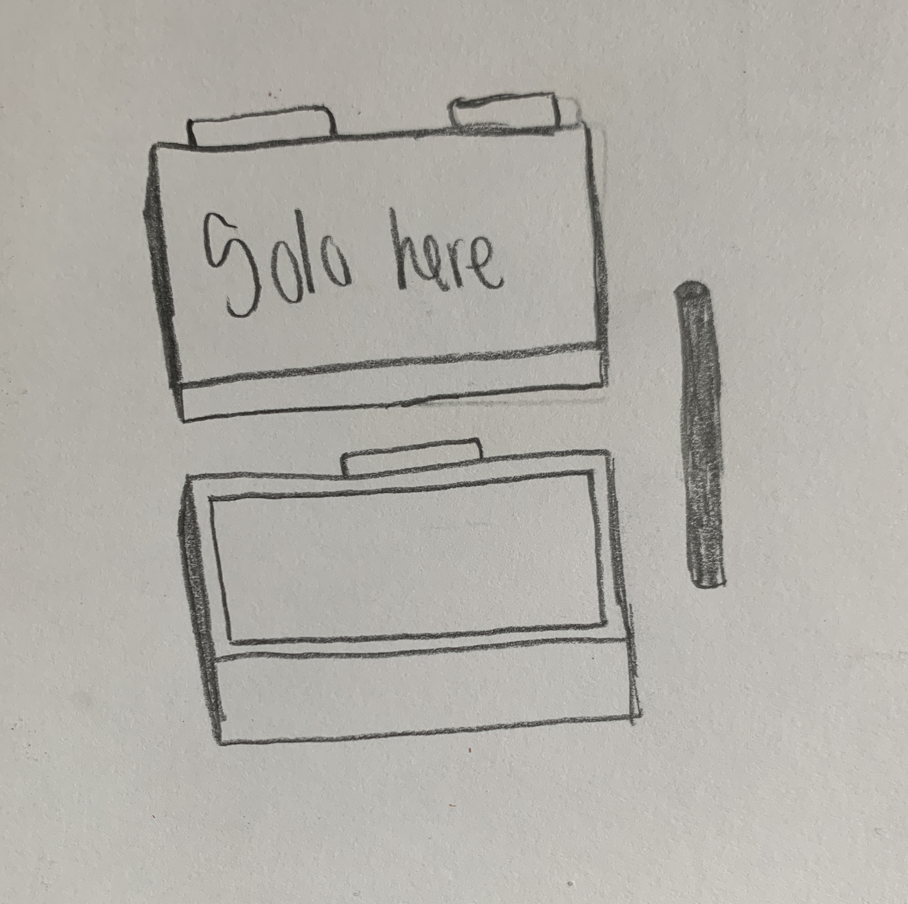
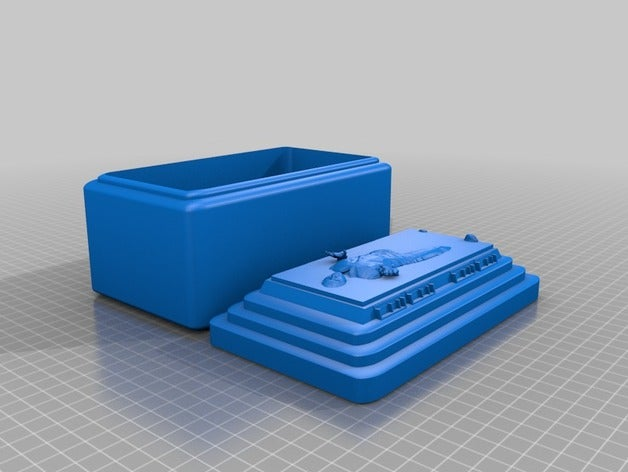
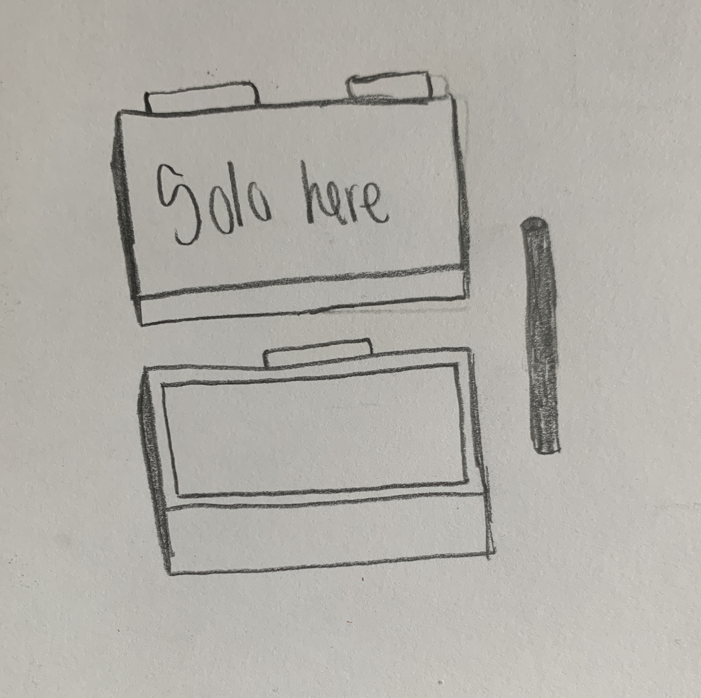
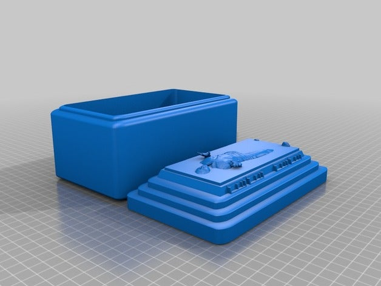
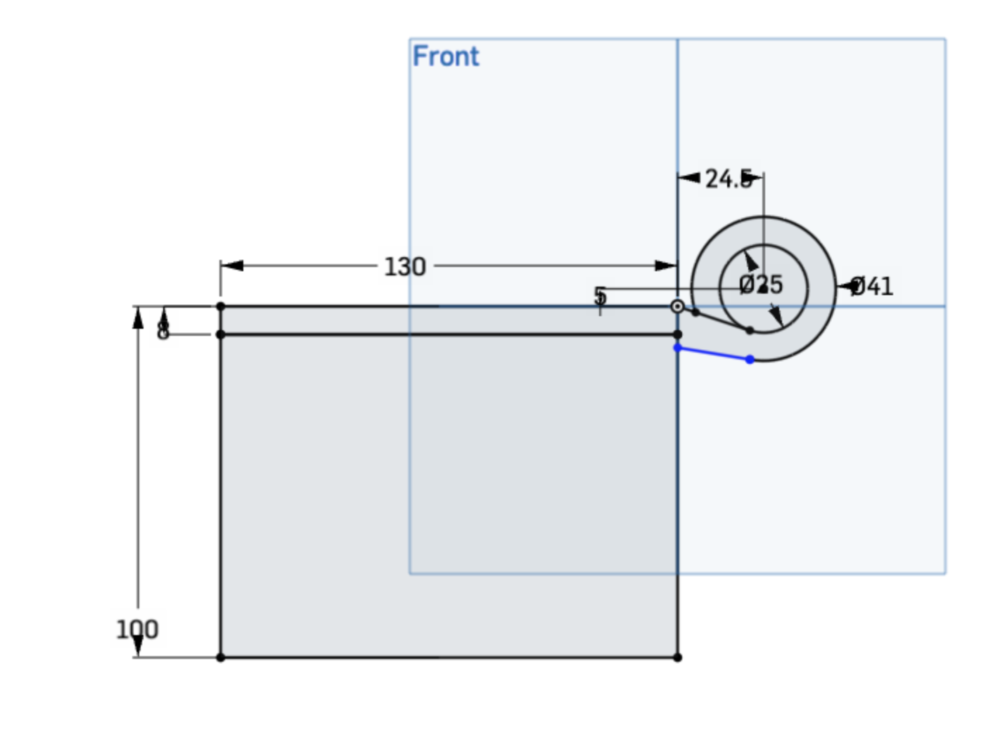

For my final project I wanted to create a hinged Han Solo in carbonite box. And I did just that. This box can be used to hold stuff and things, and it'll be cool to look at. My inspiration for this project is below.
 



I began this assignment by doing some research on hinged boxes and how to create on in a CAD software. I used OnShape to create my box. I followed a tutorial online and modified it for my needs. I used the assembly feature to make sure my pieces would fit together. I then exported my project in two parts, the box as an STL, and the lid as a rhino file. Using Rhino, I then added the Han Solo STL I found on Thingiverse to the lid. I had ppreviously modified the Han Solo STL for my needs so it was just his body frozen and not the carbonite. I resized the STL as needed and then exported the finished lid as an STL for printing.
Box Build:
- Lid: 8 mm thick, 130 mm wide and 292 mm long
- Bottom: 100 mm thick, 130mm wide and 292 mm long.
- The extruded inside of the box is 118mm wide, 280 mm long and 90 mm deep.


Once I was done with my files it was time to 3D print. I uploaded my files to Digilab and rotated the lid to sit vertical (90 degrees). I also went and added custom settings so I could have a brim to help hold the lid down due the angle of it printing. I followed the 3D printer set up for the machines in Fluke. I did a small test print to make sure my measurments were correct. My print for the most part was successful, there was an issue with the lid corner but it still worked to show me how my design looked and areas of my design to fix. While my pieces fit together in assembly they did not as a 3D print because I had forgotten to adjust my male and female parts to account for the edges of the 3D print. I went back into my OnShape file and made the adjustments.

Unfortunetly this time around Fluke had no open printers so I risked it and went to the MILL. I again imported my files to Digilab scaled my files to 76.2 mm (3 inches). After setting up the 3D printer I decided to stay and keep a close eye on my pieces. I waited for it to get to a good point and left the rest up to the 3D printer gods. The print job was 6 hours and 13 minutes. I came back the following day and my print was successful! I removed the supports and in doing so I realized that one of Han Solo's hands did not quite make it into the lid and was left floating. I was able to super glue it down, but because this is the final project I wanted everything to be perfect I attempted to reprint the lid. Upon further inspection of my STL file I could see where my issue came from and fixed it accordingly. I did try 3 times to reprint the lid both in Fluke and the MILL but unfortunately the 3D printer Gods were not with me. After accepting my losses I then tried 3D printing the dowel that would hold my box together. SHOCKER that failed, but I followed my contingency plan and went to Michael's to purchase a wooden dowel as a stock part. The piece was a little too long so I went to the MILL and had it sawed down to fit. I finished it off by adding glue and some tape to hold the dowel in place.

If I could do this project over again I would try 3D printing on medium, to have a cleaner look. I would also like to make sure all files are ready for printing and that all pieces are where they need to be AKA not floating around in the quantum realm. I would also remember to leave spacing for the male and female parts. Lastly I would print both of my vertically so there isn't inconsistancy in the look of the pieces. The vertical printed lid is super clean and polished compared to the horizontal box bottom. Some challenges I faced were with the 3D printer and the filament just getting caught on itself and failing. Another challenge which was more of an oversight was leaving room for the male parts in the female parts.

I'm proud of the work that I did. I was able to incorporate a lot of things I taught myself in this class to create my final piece. Even when creating this project I was still able to learn new things. I think what made this project so successful was the ample time I gave myself to work and account for any possible curveballs. I was actually ahead of schedule which was really nice and I ended up getting my project done very early.
Techniques Used:
- CAD modeling
- 3D printing
- Interlocking parts
- Moving parts
- Stock parts
- Filament: Purchased at the MILL. Amount of filament needed will vary based on printer used.
- Wooden Dowel: 3/8th inch thick purchased from Michael's cut down from 12 inches long to 3 inches
- Rhino File: Box Lid
- Rhino File: Box Bottom
- Rhino File: Just Solo (solo solo)
- STL File: Box Lid
- STL File: Box Bottom
- STL File: Just Solo (solo solo)
- OnShape: Just the box pieces
- Thingverse Han Solo Inspiration
I did not receive any peer help for this assignment.